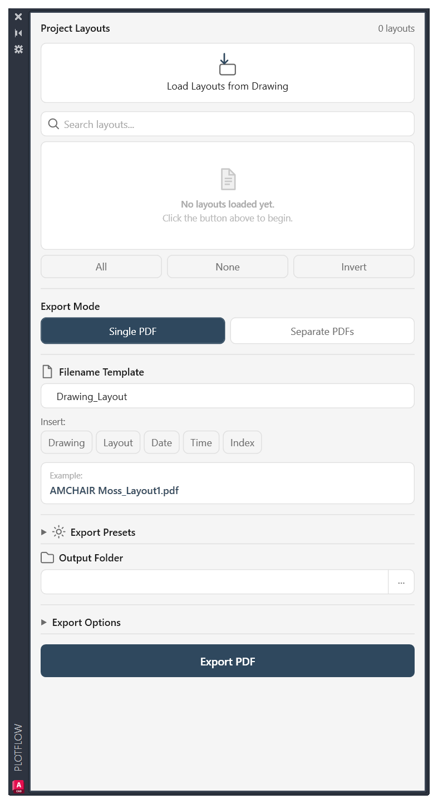
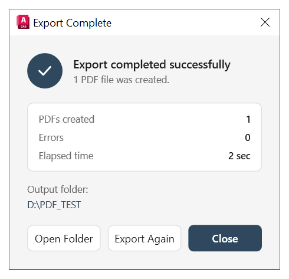

Batch Export
Publish dozens of layouts with a single click.
Export dozens of layouts with reusable presets, smart filename templates and a workflow that feels completely native to AutoCAD.


Compatible with AutoCAD 2018 • 2019 • 2020 • 2021 • 2022 • 2023 • 2024 • 2025 • 2026
PlotFlow removes repetitive work and gives you a clean, reliable workflow directly inside AutoCAD.
Publish dozens of layouts with a single click.
Generate meaningful filenames automatically using templates.
Save export settings once and reuse them for every project.
Familiar interface that feels like a built-in AutoCAD tool.
Export the whole project into one PDF or create separate files.
No cloud services. No subscriptions. No internet required.
Designed to eliminate repetitive publishing and save time every day.
Open your AutoCAD drawing containing all layouts.
Choose one, multiple, or all layouts.
Filename template, presets and export options.
One click. Professional PDFs ready to deliver.
Try PlotFlow free and see how much time you can save on every project.
Everything you need to know before using PlotFlow.
PlotFlow supports AutoCAD 2018 through 2026.